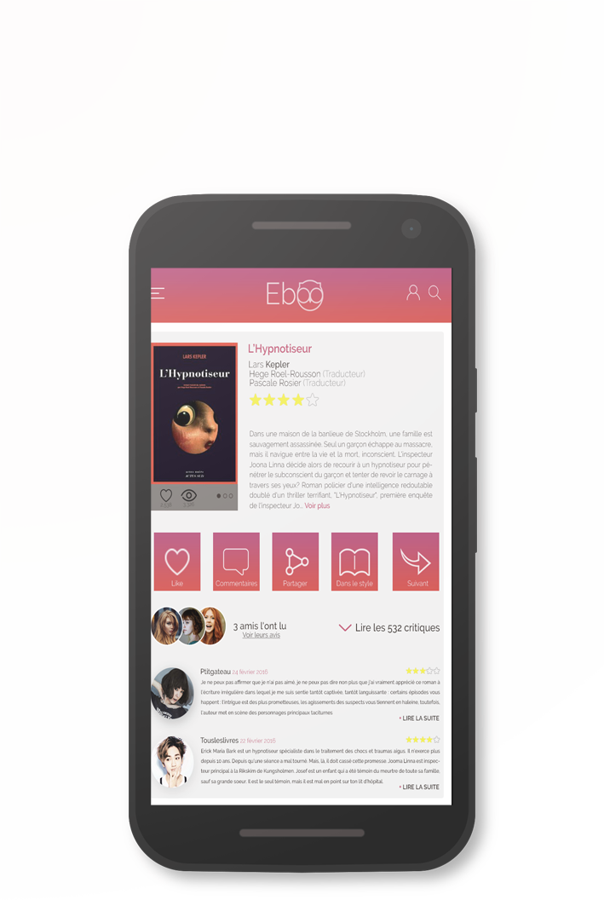
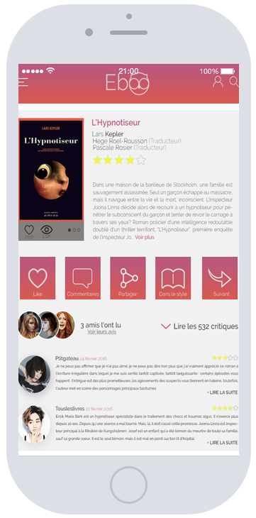

<!DOCTYPE html>
<html lang="fr">
<head>
    <meta charset="UTF-8">
    <meta name="viewport" content="width=device-width, initial-scale=1">
    <title>eBoo</title>
    <link rel="stylesheet" href="assets/css/styles.css">
</head>
<body>
<header>
    <nav>
        <div class="left-nav">
            
            <span>Menu</span>
        </div>

        <div class="right-nav">
            <ul>
                <li>
                    <a href="#project">Notre projet</a>
                </li>
                <li>
                    <a href="#application">L'application</a>
                </li>
                <li>
                    <a href="#advantages">Avantages</a>
                </li>
                <li>
                    <a href="#contact">Contact</a>
                </li>
            </ul>

            <button class="sign-up">Inscription</button>
        </div>
    </nav>

    

    <div class="titles">
        <h1>
            Découvrez une communauté entière derrière<br>
            votre bouquin
        </h1>
        <br>
        <h2>Grâce à notre nouvelle application disponible</h2>
    </div>

    <div class="header-btn">
        <button class="register">Inscrivez-vous</button>
        <button class="more">En savoir plus</button>
    </div>

    
</header>

<section id="project">
    <h3>Notre projet</h3>
    <h4>
        Typewriter wayfarers man braid celiac, salvia<br>
        small batch stumptown tousled
    </h4>
    <hr class="pink-hr">
    
    <br>
    <p class="text">
        Eboo est une solution simple et intuitive utilisant la technologie NFC afin d’avoir des<br>
        avis constructifs et fiables en temps réel, de faire partager ses notes et<br>
        commentaires entre amis et d’être conseillé sur des bouquins en fonction de ses<br>
        goûts. Pour cela il suffit juste de scanner le tag situé à la dernière couverture et<br>
        l’application dédiée sur la page du bouquin en question s’affichera. Avec Eboo, il n’a<br>
        jamais été aussi simple et pratique d’en apprendre plus sur un livre sur place.
    </p>
</section>

<section id="application">
    
    
    <div>
        <h3>Notre application</h3><br>
        <p class="text">
            Squid portland fashion axe kitsch. Brunch listicle<br>
            meggings intelligentsia PBR&B. Try-hard sustainable blue<br>
            bottle kickstarter ethical, echo park cronut williamsburg<br>
            skateboard cardigan salvia distillery lo-fi meditation<br>
            tacos. Bespoke direct trade flexitarian, mixtape marfa<br>
            offal cronut blog bushwick.
        </p>
    </div>
    <button class="register application-more">En savoir plus</button>
    
    
</section>

<section id="advantages">
    <div>
        <h3>Avantages</h3><br>
        <h4>
            Typewriter wayfarers man braid celiac, salvia<br>
            small batch stumptown tousled
        </h4>
        <hr class="pink-hr">
        <ul class="advantages-text">
            <li class="simplicity-text">
                <h5>Simplicite</h5>
                <p class="text">
                    Squid portland fashion axe kitsch. Brunch listicle<br>
                    meggings intelligentsia PBR&B. Try-hard sustainable blue<br>
                    bottle kickstarter ethical, echo park cronut williamsburg<br>
                    skateboard cardigan salvia distillery lo-fi meditation<br>
                    tacos. Bespoke direct trade flexitarian, mixtape marfa<br>
                    offal cronut blog bushwick.
                </p>
                <br>
                
            </li>
            <li class="community-text">
                <h5>Communautaire</h5>
                <p class="text">
                    Squid portland fashion axe kitsch. Brunch listicle<br>
                    meggings intelligentsia PBR&B. Try-hard sustainable blue<br>
                    bottle kickstarter ethical, echo park cronut williamsburg<br>
                    skateboard cardigan salvia distillery lo-fi meditation<br>
                    tacos. Bespoke direct trade flexitarian, mixtape marfa<br>
                    offal cronut blog bushwick.
                </p>
                <br>
                
            </li>
            <li class="intuitive-text">
                <h5>Intuitif</h5>
                <p class="text">
                    Squid portland fashion axe kitsch. Brunch listicle<br>
                    meggings intelligentsia PBR&B. Try-hard sustainable blue<br>
                    bottle kickstarter ethical, echo park cronut williamsburg<br>
                    skateboard cardigan salvia distillery lo-fi meditation<br>
                    tacos. Bespoke direct trade flexitarian, mixtape marfa<br>
                    offal cronut blog bushwick.
                </p>
                <br>
                
            </li>
        </ul>
    </div>
</section>

<footer>

</footer>

<script src="assets/js/jquery-2.2.1.min.js"></script>
<script src="assets/js/script.js"></script>
</body>
</html>